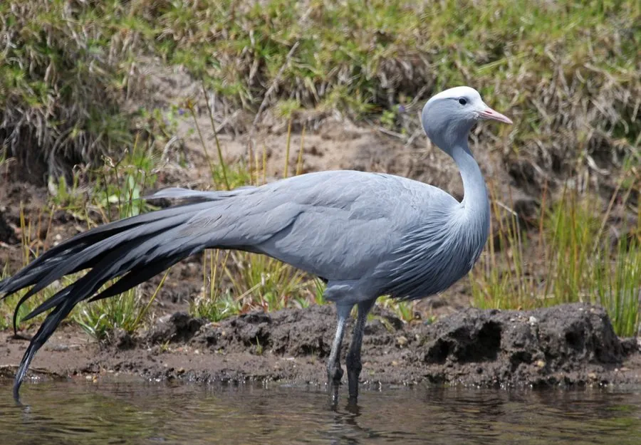

鸟类 · 动物界
蓝蓑羽鹤 Anthropoides paradiseus

南非的国鸟，淡蓝灰色羽衣配白色头冠，胸前的黑色蓑羽和修长尾羽如礼服般优雅，是分布最南的鹤类。
- 分类
- 门脊索动物门纲鸟纲目鹤形目科鹤科属蓑羽鹤属
- 栖息环境
- 草原、农田、浅水湿地与河滩，常在高草丛中营巢
- 地理分布
- 南非、莱索托、斯威士兰和纳米比亚，中国无分布
- 保护级别
- IUCN 易危（VU）；非中国分布物种
物种志
蓝蓑羽鹤体长 100–120 cm，体重 4–6.2 kg。它的体羽呈淡蓝灰色，头顶白色，脸部有白色和灰色的裸皮，喙淡粉色，腿黑色；胸前垂着黑色的长蓑羽，尾羽修长呈深灰色，站立时像穿着一件优雅的燕尾服。
蓝蓑羽鹤是南非的特有种，主要分布于南非、莱索托、斯威士兰和纳米比亚，栖息在草原、农田和浅水湿地。它们以植物种子、根茎、昆虫和小型脊椎动物为食，常在农田中觅食，有时会因取食谷物被农民视为害鸟。繁殖期在地面产卵 2 枚，孵化 30–33 天。蓝蓑羽鹤是南非的国鸟，全球种群数量有限，被列为易危物种，是非洲分布最南的鹤类。
形态与习性
- 食性植物种子、根茎、昆虫和小型脊椎动物
- 体长100–120 cm
- 体重4–6.2 kg
- 繁殖每窝 2 枚卵，孵化 30–33 天
- 文化地位南非的国鸟
- 寿命野外约 20 年
趣味知识
- 蓝蓑羽鹤是南非的国鸟，羽色淡蓝灰，尾羽修长如燕尾服。
- 它是非洲分布最南的鹤类，多在南非的草原和农田中活动。
- 蓝蓑羽鹤胸前的黑色蓑羽十分醒目，是辨认它的重要特征。